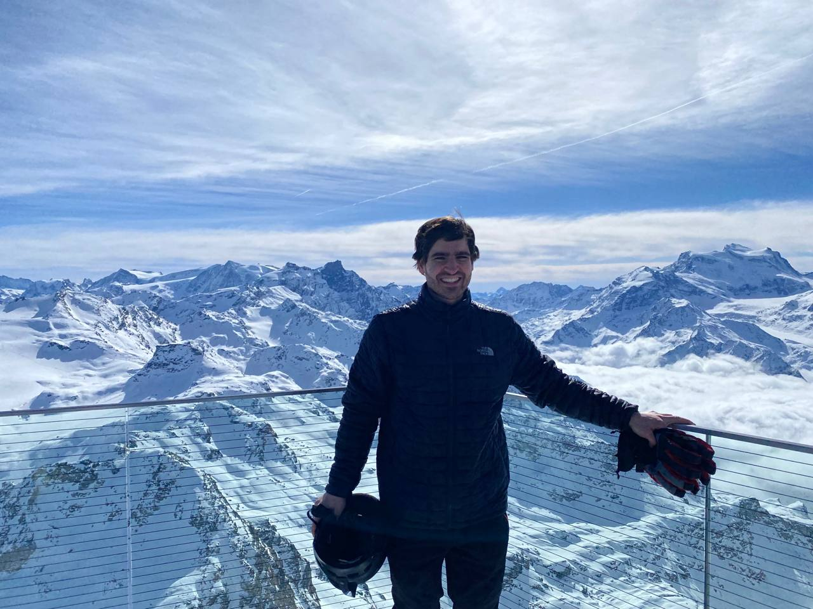

present
building something new...
past
Most recently, I was a researcher at the blockchain analytics firm Coin Metrics where I led State of the Network, a data-driven publication covering the crypto industry. I also contributed to the art+tech focused blog artnome, an early commentator on A.I. & crypto art. Prior to that, I worked in economic consulting and studied economics and mathematics at Boston College.
timeless
Massachusetts native, running, cycling, hiking, adventuring, drinking good coffee, learning Italian (la lingua più bella del mondo), reading history, philosophy, & the classics.
contact
Twitter: @kylewaters_
moments
